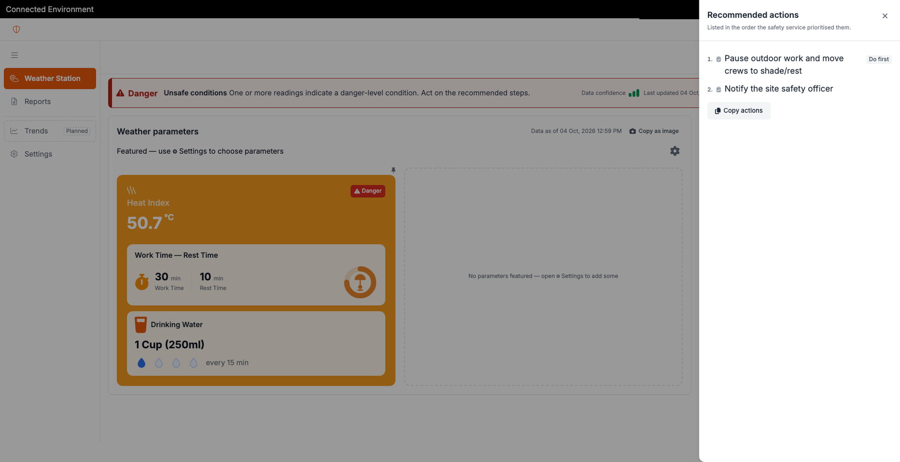
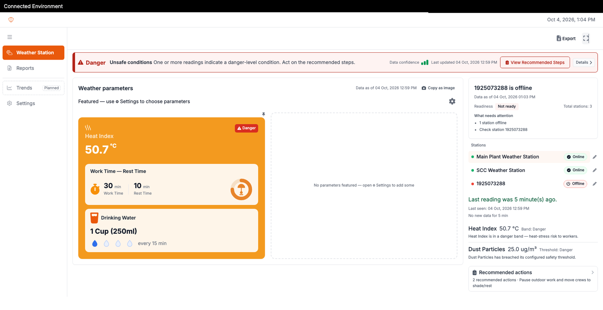
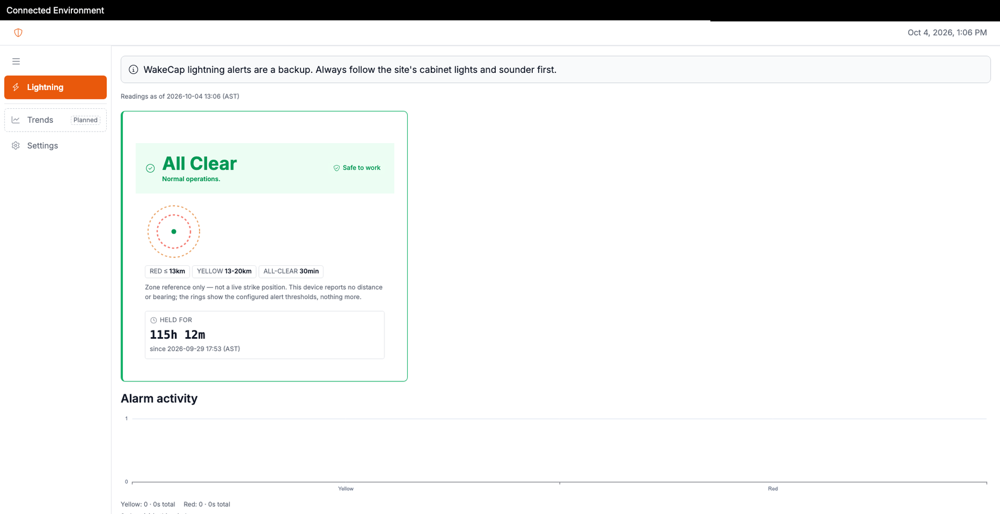
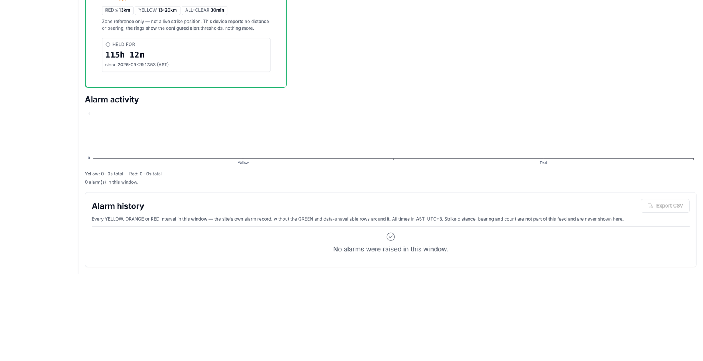
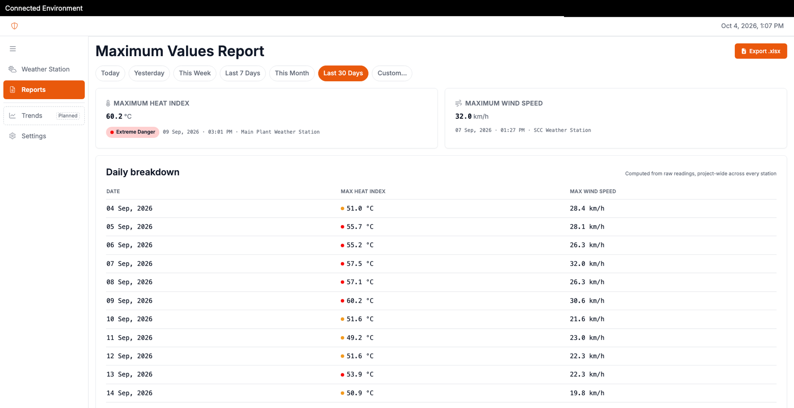
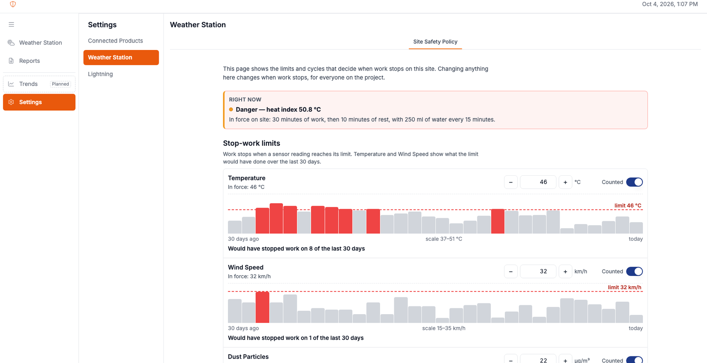
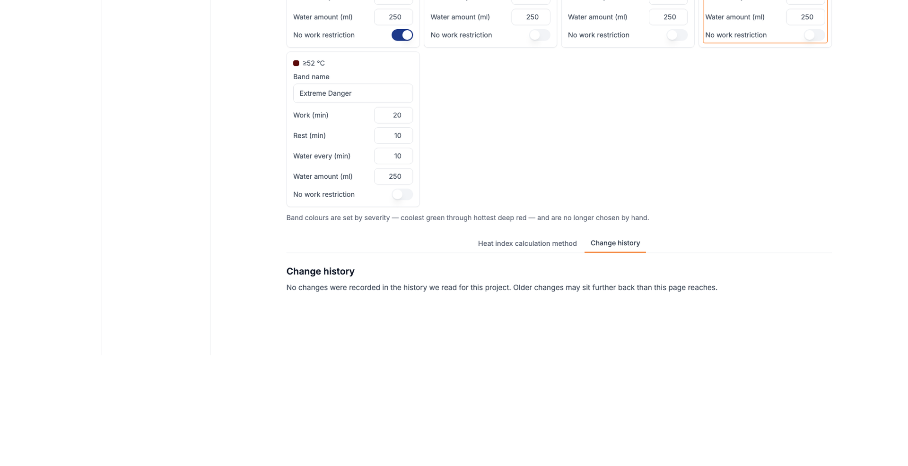

WakeCap
Connected Environment
Is it safe to work right now?
The problem
- ×A grid of readings, no verdict
- ×A stopped sensor, old data that still looks fine
Numbers are not answers.
One area per project
Introducing Connected Environment
Weather Station · Lightning · Reports · Settings



Weather Station
Weather Station: the verdict comes first


Lightning
Lightning: status and alarm history



Reports and Settings
Reports, and a Safety Policy with history
What you get
One verdict. One place.
Answer first
The verdict and the next step lead the page
Nothing hidden
Offline stations are named, not silent
On record
The Safety Policy keeps a change history
Try it now